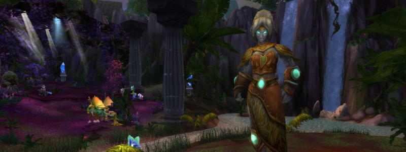

Freya

Overview
The large room where Freya roams (she doesn’t bodypull) has a lot of trash, of which 3 Mini Bosses that will be quickly detailed.
Normal Mode Freya will usually involve killing these 3 Mini Bosses before engaging her. Freya heals herself for massive amounts, decaying over the course of the fight. DPSing her on pull is utterly useless and a waste of trinket procs. A fairly unremarkable Phase2 will happen once that healing is removed by dealing with 6 waves of Adds.
Mini-bosses Rundown
- Elder Stonebark, first to be pulled, uses Ground Tremors, dealing Raidwide damage and interrupting.
- He buffs himself with Stone Bark, causing massive reflect damage on melee hits. Dual Wielders should stop DPSing entirely.
- He buffs himself with Fists of Stone, massively increasing his melee damage but slowing him. The Tank must run out.
- Elder Ironbranch, second one in the back right, casts Iron Roots on a single random Player. This places a “Iron Roots” NPC on top of the Player, which keeps the Player debuffed with a snare and large damage over time. Killing the NPC removes the debuff, as does Hand of Freedom (shouldn’t happen pre-nerfs)
- He’ll also Impale the Tank, dealing massive damage. Should be a Tank swap but can be survived through.
- Elder Brightleaf, the last one, regularly shoots high-damage bolts at random Players that can’t be avoided and might cause butthurt due to one-shots.
- He also places Sunbeams that continuously damage Players under it, and continuously empower him if he stays under it. Tank should simply keep moving him nonstop.
Full Mechanics Rundown
Note that Freya will be engaging the Tank in melee during the whole fight, but the damage is easily fixed.
- Sunbeam: One of the few spells Freya herself will use. Simply deals AoE damage on a random Player after a short cast. Can’t really be avoided, but rewards spreading.
- Eonar’s Gift/Lifebinder’s Gift: Spawns a small targetable tree NPC. If the tree remains alive for long enough (~15s?), it will massively heal Freya and any Adds present. This is not a hard mechanic, even in Hard Mode: The tree dies easily even to a single Player collapsing on it.
- Attuned to Nature: As mentioned before, Freya will heal herself constantly. Every wave of Adds that she summons will reduce the healing by 1/6th. She won’t summon Adds after the 6th wave, which is when her healing will be near-nullified. When that happens, a short Phase2 begins.
- These 6 waves of Adds are on a timer, so it is possible to have several waves if the DPS is low, or a large dull empty time if DPS is high. They spawn in a random order, but will always involve three types of waves, happening twice each.
Now, onto the Adds:
Ancient Conservator
- The Ancient Conservator is a single, large treant. Upon spawning he will cast Conservator’s Grip.
- The Conservator’s Grip continuously Silences and Pacifies anyone who’s not standing under Mushrooms that continuously sprout around the room, grow in size and then eventually shrink. Standing under a Mushroom grants a +50% Damage increase to reward you while we’re at it. The Mushrooms still spawn even when Conservator’s Grip is cancelled.
- As long as the Conservator is alive, Nature’s Fury will be regularly cast on one random Player. Nature’s Fury (A.K.A Lightning Rod) deals large Nature Damage every second to any other Players near the debuffed Player. Move out of the Raid!
Exploding Lashers
- A swarm of ~12 smaller Adds. They deal noticeable damage to their threat target in spite of how many there are, caution is therefore advised with threat.
- They explode on death (It’s in the name, hey) dealing Fire damage, sizable enough to kill Players if mismanaged. They must be crowd controlled (as much as possible) before they die, stepped clear from, and finished off.
- The Raid will usually stack when they appear (so that they’re easily blown apart by AoE, including Tank Threat AoEs) and then spread after some AoE crowd control has been dropped (Frost Trap/Earthbind/Shadowfury…)
Guardians of Nature
That’s their official name. They’re actually three Adds with roughly the same HP pool. They must die within a 12 seconds interval, lest they revive each other (DPS switch will be called):
- The Storm Lasher regularly zaps nearby enemies with Nature damage which can be shrugged off. He also casts a fairly underwhelming lightning bolt at his current target, which should be interrupted even though it’s not a death sentence. He’s the easiest to deal with.
- The Ancient Water Spirit has only one mechanic: a 2-second cast that will, if completed, charge at a faraway Player, dealing massive damage in its path (but not one-shotting in Normal Mode). This cannot be interrupted but other crowd control will work (Stuns mostly)
- The Snaplasher is a most peculiar mob that deals reasonable damage to his threat target, but greatly increases his melee damage as he receives damage - up to “One-Shot the Tank” territory. He’s easily crowd controlled by slows however. Everyone dishing threat on the Snaplasher should be wary of not pulling aggro. It’ll usually be handled by a Hunter or an Offtank (taunting but not meleeing) with assistance from a DK’s Chains of Ice.
P2
Once 6 waves of Adds have been dealt with, Freya will enter Phase2. She will still cast Sunbeams and Lifebinder’s Gifts, but has mostly one last mechanic: * Nature Bombs will be dropped on the Players’ positions. After a short delay, they will explode. This is easily handled by having the Raid grouped loosely around the same spot; moving a safe distance away whenever bombs are dropped. A good landmark that we’ll use is crossing a river back and forth whenever bombs are dropped. When Freya reaches 0 HP, the fight ends.
Essentials
Tanks
- Freya’s Tank doesn’t have much to do, and will likely pick up the Storm Lasher or the Water Spirit.
- Do not attempt facetanking the Snaplasher.
Healers
- Move out of Exploding Lashers when they’re about to die, and run away from teammates when debuffed by Nature’s Fury.
DPS
- Pay attention to the DPS focus on Allies of Nature and do not facetank the Snaplasher.
- Move out of Exploding Lashers when they’re about to die, and run away from teammates when debuffed by Nature’s Fury.
- Stay under Mushrooms when the Ancient Conservator is active.
Special Assignments
Snaplasher crowd controller(s).
Hard Mode
This boss has a hard mode for the fight. Click here to check its guide.